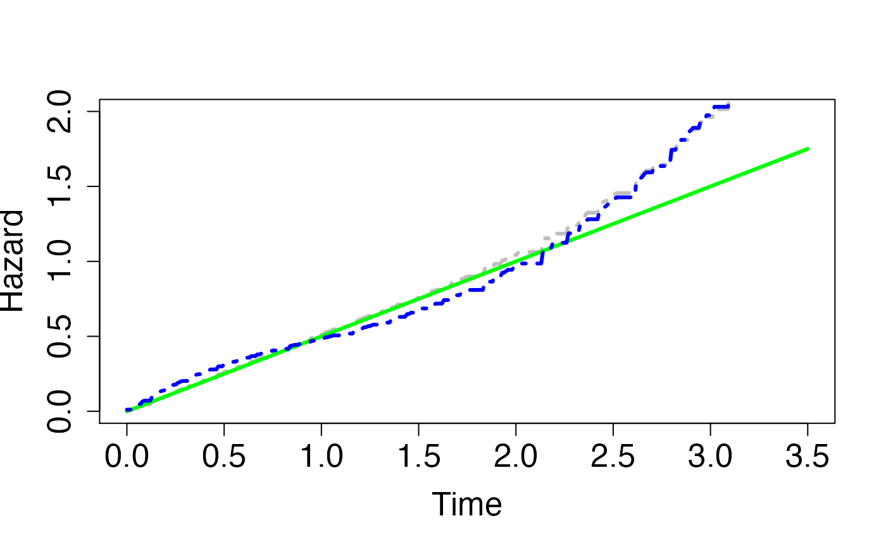
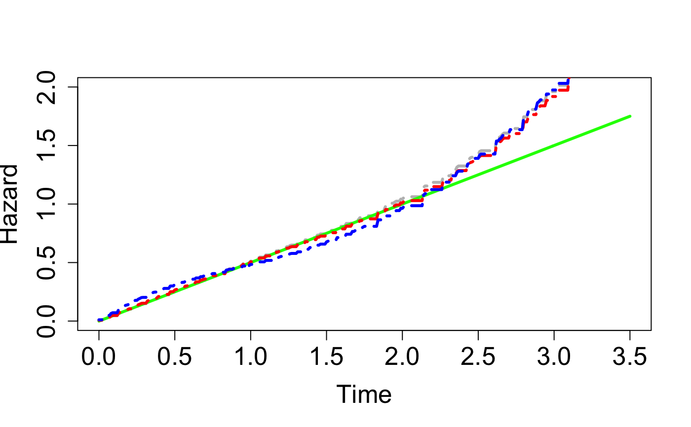

coxph_mpl_dc.RdSimultaneously estimate the regression coefficients and the baseline hazard function of proportional hazard Cox models under dependent right censoring using maximum penalised likelihood (MPL) and Archimedean Copulas
coxph_mpl_dc(surv, cova, control,...)
| surv | the outcome of survival data, with the first column X (observed time), second column del (event indicator) and third column eta (dependent right censoring indicator). |
|---|---|
| cova | the covariate matrix, with dimension of n rows and p columns, where 'n' is the sample size and 'p' is the number of covariates
Default is |
| control | object of class |
| ... | other arguments. In |
MPL estimates of the regression coefficient for the basis functions of the baseline hazard of T, i.e. theta
MPL estimates of the regression coefficient for the basis functions of the baseline hazard of C, i.e. gamma
MPL estimates of the baseline hazard for T, i.e. h_0T(x_i)
MPL estimates of the baseline hazard for C, i.e. h_0C(x_i)
MPL estimates of the baseline cumulative hazard for T, i.e. H_0T(x_i)
MPL estimates of the baseline cumulative hazard for C, i.e. H_0c(x_i)
MPL estimates of the baseline survival for T, i.e. S_0T(x_i)
MPL estimates of the baseline survival for C, i.e. S_0C(x_i)
MPL estimates of beta
MPL estimates of phi
the penalized log-likelihood function given the MPL estimates
the first derivative of penalized log-likelihood function with respect to beta given the MPL estimates
the first derivative of penalized log-likelihood unction with respect to phi given the MPL estimates
the first derivative of penalized log-likelihood function with respect to theta given the MPL estimates
the first derivative of penalized log-likelihood function with respect to gamma given the MPL estimates
a vector of length 3 indicating the number of iterations used to estimate the smoothing parameter (first value, equal to 1 when the user specified a chosen value), the beta, phi, theta and gamma parameters during the entire process (second value), and beta, phi, theta and gamma parameters during the last smoothing parameter iteration (third value)
the cross validation value given the MPL estimates
the AIC value given the MPL estimates
the asymptotic standard deviation of the MPL estimated beta
the asymptotic standard deviation of the MPL estimated phi
the asymptotic standard deviation of the MPL estimates for the baseline hazard coefficient of T, i.e. theta
the asymptotic standard deviation of the MPL estimates for the baseline hazard coefficient of C, i.e. gamma
the asymptotic standard deviation of the MPL estimates for the baseline hazard of T
the asymptotic standard deviation of the MPL estimates for the baseline hazard of C
the asymptotic standard deviation of the MPL estimates for the cumulative baseline hazard of T
the asymptotic standard deviation of the MPL estimates for the cumulative baseline hazard of C
the asymptotic standard deviation of the MPL estimates for the baseline survival of T
the asymptotic standard deviation of the MPL estimates for the baseline survival of C
the asymptotic covariance matrix of the MPL estimates
the MPL estimates for regression coefficient with their corresponding standard deviations, z scores and p-values
the width of each discretized bin of the observed times when piecewise constant approximation applied to the baseline hazards
the bin ID for each individual of the sample when piecewise constant approximation applied to the baseline hazards
the edge for each discretized bin among the observed time vector X, which are the internal knots and boundaries
basis function matrix psi(x_i) with dimension of n by m for baseline hazard, where m=number of internal knots+ordSp
basis function matrix Psi(x_i) with dimension of n by m for baseline cumulative hazard
coxph_mpl_dc allows to simultaneously estimate the regression coefficients and baseline hazard function of Cox proportional hazard models, with dependent and independent right censored data, by maximizing a penalized likelihood, in which a penalty function is used to smooth the baseline hazard estimates. Note that the dependence between event and censoring times is modelled by an Archimedean copula.
Optimization is achieved using an iterative algorithm, which combines Newton’s method and the multiplicative iterative algorithm proposed by Ma (2010), and respects the non-negativity constraints on the baseline hazard estimate (refer to Ma et al (2014) and Xu et al (2018)).
The centered covariate matrix \(Z\) is used in the optimization process to get a better shaped (penalized) log-likelihood. Baseline hazard parameter estimates and covariance matrix are then respectively corrected using a correction factor and the delta method.
The estimates of zero are possible for baseline hazard parameters (e.g., when number of knots is relatively large to sample size) and will correspond to active constraints as defined by Moore and Sadler (2008). Inference, as described by Ma et al (2014) or Xu et al (2018), is then corrected accordingly (refer to Moore and Sadler (2008)) by adequately cutting the corresponding covariance matrix.
There are currently three ways to perform inference on model parameters: Let \(H\) denote the negative of Hessian matrix of the non-penalized likelihood, \(Q\) denote the product of the first order derivative of the penalized likelihood by its transpose, and \(M_2\) denote the negative of the second order derivative of the penalized likelihood. Then the three estimated covariance matrices for the MPL estimates are \(M_{2}^{-1}\), \(M_{2}^{-1}HM_{2}^{-1}\) and \(M_{2}^{-1}QM_{2}^{-1}\).
Simulation studies the coverage levels of confidence intervals for the regression parameters seem to indicate \(M_{2}^{-1}HM_{2}^{-1}\) performs better when using the piecewise constant basis, and that \(M_{2}^{-1}QM_{2}^{-1}\) performs better when using other bases.
Ma, J. (2010). "Positively constrained multiplicative iterative algorithm for maximum penalised likelihood tomographic reconstruction". IEEE Transactions On Signal Processing 57, 181-192.
Ma, J. and Heritier, S. and Lo, S. (2014). "On the Maximum Penalised Likelihood Approach forProportional Hazard Models with Right Censored Survival Data". Computational Statistics and Data Analysis 74, 142-156.
Xu J, Ma J, Connors MH, Brodaty H. (2018). "Proportional hazard model estimation under dependent censoring using copulas and penalized likelihood". Statistics in Medicine 37, 2238–2251.
# \donttest{ ##-- Copula types copula1 <- 'clayton' copula2 <- 'gumbel' copula3 <- 'frank' copula4 <- 'independent' ##-- Marginal distribution for T, C, and A a <- 2 lambda <- 2 cons7 <- 0.2 cons9 <- 10 tau <- 0.8 betas <- c(-0.5, 0.1) phis <- c(0.3, 0.2) distr.ev <- 'weibull' distr.ce <- 'exponential' ##-- Sample size n <- 200 ##-- One sample Monte Carlo dataset cova <- cbind(rbinom(n, 1, 0.5), runif(n, min=-10, max=10)) surv <- surv_data_dc(n, a, cova, lambda, betas, phis, cons7, cons9, tau, copula3, distr.ev, distr.ce) n <- nrow(cova) p <- ncol(cova) ##-- event and dependent censoring proportions colSums(surv)[c(2,3)]/n#> del eta #> 0.415 0.415X <- surv[,1] # Observed time del<-surv[,2] # failure status eta<-surv[,3] # dependent censoring status ##-- Selecting bin sample or number of knots using AIC vs binCounts plot binCounts <- seq(10, 100, 10) bn <- length(binCounts) aics<-rep(0, bn) for (j in 1:bn) { control=coxph_mpl_dc.control(ordSp = 4, binCount = binCounts[j], tie = 'No', tau = 0.8, copula = copula3, pent = 'penalty_mspl', smpart = 0, penc = 'penalty_mspl', smparc = 0, maxit2 = 100, maxit = 5000, mid = 1, asy = 0, ac = 1, cv = 0, ac.theta = 1e-5, ac.gamma = 1e-5, ac.Utheta = -1e-2, ac.Ugamma = -1e-2, min.theta = 1e-7, min.gamma = 1e-7, min.ht = 1e-7, min.hc = 1e-7, min.St = 1e-7, min.Sc = 1e-7, min.C = 1e-7, min.dC = 1e-7, eps = 1e-5, tol.thga = 1e-5, tol.bph = 1e-5, tol.smpar = 1e-2, cat.smpar = 'No' ) aics[j]<-coxph_mpl_dc(surv, cova, control)$mpl_aic print(j) }#> [1] 1 #> [1] 2 #> [1] 3 #> [1] 4 #> [1] 5 #> [1] 6 #> [1] 7 #> [1] 8 #> [1] 9 #> [1] 10##-- control inputs for the coxph_mpl_dc function control <- coxph_mpl_dc.control(ordSp = 4, binCount = binCount, tie = 'No', tau = 0.8, copula = copula3, pent = 'penalty_mspl', smpart = 'REML', penc = 'penalty_mspl', smparc = 'REML', maxit2 = 100, maxit = 100000, mid = 1, asy = 1, ac = 1, cv = 1, ac.theta = 1e-5, ac.gamma = 1e-5, ac.Utheta = -1e-2, ac.Ugamma = -1e-2, min.theta = 1e-7, min.gamma = 1e-7, min.ht = 1e-7, min.hc = 1e-7, min.St = 1e-7, min.Sc = 1e-7, min.C = 1e-7, min.dC = 1e-7, eps = 1e-5, tol.thga = 1e-5, tol.bph = 1e-5, tol.smpar = 1e-2, cat.smpar = 'No' ) ##-- Fitting cox ph hazard model for T using MPL and an correct copula #with REML smoothing parameters coxMPLests5 <- coxph_mpl_dc(surv, cova, control, ) mpl_beta_phi_zp5 <- coxMPLests5$mpl_beta_phi_zp mpl_h0t5 <- coxMPLests5$mpl_h0t mpl_h0Ti5 <- approx( X, mpl_h0t5, xout = seq(0, 5.4, 0.01), method="constant", rule = 2, ties = mean)$y ##-- Real marginal baseline hazard for T ht0b <- a * (seq(0, 5.4, 0.01) ^ (a - 1)) / (lambda ^ a) ##-- Selectiong a smoothing parameter for T using CV method #given zero for the smoothing parameter of C smparts <- seq(10, 100, 10) smn <- length(smparts) smparcs <- rep(0, smn) cvls<-rep(0, smn) for (j in 1:smn){ control <- coxph_mpl_dc.control(ordSp = 4, binCount = binCount, tie = 'No', tau = 0.8, copula = copula3, pent = 'penalty_mspl', smpart = smparts[j], penc = 'penalty_mspl', smparc = smparcs[j], maxit2 = 100, maxit = 10000, mid = 1, asy = 0, ac = 0, cv = 1, ac.theta=1e-5, ac.gamma=1e-5, ac.Utheta=-1e-2, ac.Ugamma=-1e-2, min.theta=1e-7, min.gamma=1e-7, min.ht=1e-7, min.hc=1e-7, min.St=1e-7, min.Sc=1e-7, min.C=1e-7, min.dC=1e-7, eps=1e-5, tol.thga=1e-5, tol.bph=1e-5, tol.smpar=1e-2, cat.smpar = 'No') cvls[j]<-coxph_mpl_dc(surv, cova, control)$mpl_cvl print(j) }#> [1] 1 #> [1] 2 #> [1] 3 #> [1] 4 #> [1] 5 #> [1] 6 #> [1] 7 #> [1] 8 #> [1] 9 #> [1] 10##-- Fitting cox ph hazard model for T using MPL and an correct copula #with a cv smoothing parameter of T coxMPLests4 <- coxph_mpl_dc(surv, cova, ordSp=4, binCount=binCount, tie='No', tau=0.8, copula=copula3, pent='penalty_mspl', smpart=smpart, penc='penalty_mspl', smparc=0, maxit2=100, maxit=100000, mid=1, asy=1, ac=1, cv=1, ac.theta=1e-5, ac.gamma=1e-5, ac.Utheta=-1e-2, ac.Ugamma=-1e-2, min.theta=1e-7, min.gamma=1e-7, min.ht=1e-7, min.hc=1e-7, min.St=1e-7, min.Sc=1e-7, min.C=1e-7, min.dC=1e-7, eps=1e-5, tol.thga=1e-5, tol.bph=1e-5, tol.smpar=1e-2, cat.smpar = 'No') mpl_beta_phi_zp4 <- coxMPLests4$mpl_beta_phi_zp mpl_h0t4 <- coxMPLests4$mpl_h0t mpl_h0Ti4 <- approx( X, mpl_h0t4, xout = seq(0, 5.4, 0.01), method="constant", rule = 2, ties = mean)$y ##-- Fitting cox ph hazard model for T using MPL and an correct copula #with zero smoothing parameters coxMPLests3 <- coxph_mpl_dc(surv, cova, ordSp=4, binCount=binCount, tie='No', tau=0.8, copula=copula3, pent='penalty_mspl', smpart=0, penc='penalty_mspl', smparc=0, maxit2=100, maxit=100000, mid=1, asy=1, ac=1, cv=1, ac.theta=1e-5, ac.gamma=1e-5, ac.Utheta=-1e-2, ac.Ugamma=-1e-2, min.theta=1e-7, min.gamma=1e-7, min.ht=1e-7, min.hc=1e-7, min.St=1e-7, min.Sc=1e-7, min.C=1e-7, min.dC=1e-7, eps=1e-5, tol.thga=1e-5, tol.bph=1e-5, tol.smpar=1e-2, cat.smpar = 'No') mpl_beta_phi_zp3 <- coxMPLests3$mpl_beta_phi_zp mpl_h0t3 <- coxMPLests3$mpl_h0t mpl_h0Ti3 <- approx( X, mpl_h0t3, xout = seq(0, 5.4, 0.01), method="constant", rule = 2, ties = mean)$y ##-- Plot the true and estimated baseline hazards for T t_up <- 3.5 y_uplim <- 2 plot(seq(0, 5.4, 0.01)[seq(0, 5.4, 0.01)<=t_up], mpl_h0Ti5[seq(0, 5.4, 0.01)<=t_up], type="l", col="grey", lty=4, lwd=3, cex.axis=1.6, cex.lab=1.6, ylim=c(0, y_uplim), xlab='Time', ylab='Hazard')lines(seq(0, 5.4, 0.01)[seq(0, 5.4, 0.01)<=t_up], ht0b[seq(0, 5.4, 0.01)<=t_up], col="green", lty=1, lwd=3, cex.axis=1.6, cex.lab=1.6, ylim=c(0, y_uplim) )lines(seq(0, 5.4, 0.01)[seq(0, 5.4, 0.01)<=t_up], mpl_h0Ti4[seq(0, 5.4, 0.01)<=t_up], col="red", lty=4, lwd=3, cex.axis=1.6, cex.lab=1.6, ylim=c(0, y_uplim) )lines(seq(0, 5.4, 0.01)[seq(0, 5.4, 0.01)<=t_up], mpl_h0Ti3[seq(0, 5.4, 0.01)<=t_up], col="blue", lty=4, lwd=3, cex.axis=1.6, cex.lab=1.6, ylim=c(0, y_uplim) )# }